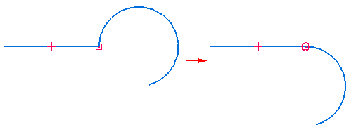
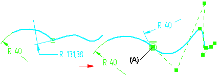
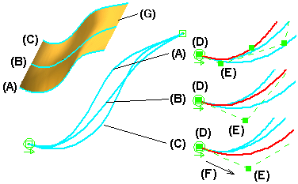
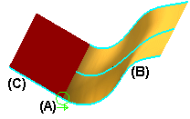
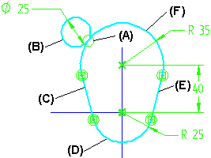

Tangent command (sketch environment)
Use the Tangent command  to make two elements tangent. For example, you apply a tangent relationship at the
endpoint between a line and an arc.
to make two elements tangent. For example, you apply a tangent relationship at the
endpoint between a line and an arc.

You can use the Relationship option on the Tangent command bar to specify the tangent option you want to use. When you apply a tangent relationship, the symbol that is displayed indicates the option you specified.
|
Legend |
|
|---|---|
|
Tangent |
|
|
Tangent + Equal Curvature |
|
 |
Parallel Tangent Vectors |
|
Parallel Tangent Vectors + Equal Curvature |
|
You cannot change the Relationship type on an existing tangent relationship. You must delete the relationship, and place a new relationship using the Relationship type you want.
Tangent option
The Tangent option is useful when one or both of the elements that you want to remain tangent are arcs or circles. For example, the Tangent option is ideal when you want a line and an arc to remain tangent. The Tangent option is available for all elements, as long as one of the elements is not a line.
Tangent + Equal Curvature option
The Tangent + Equal Curvature option is useful when you want the elements to remain both tangent and have the same radius of curvature. This option requires that the first element you select is a b-spline curve. The second element can be any non-linear element, such as an arc, circle, ellipse, b-spline curve, or a non linear edge. When you select a b-spline curve, the relationship is applied to the edit point on the curve that closest to the location you select. In this example, the radius of curvature of the b-spline curve at its endpoint is equal to the radius of the arc, because the select location was closest to the edit point (A) at the end of the curve.

Parallel Tangent Vectors option
When you use the Parallel Tangent Vectors option, you ensure that the tangent vectors of the input curves are parallel. Because you can apply a tangent relationship between elements on different reference planes, the Parallel Tangent Vectors option is useful when all the curves that form a freeform surface must blend smoothly at their endpoints, which helps to ensure a smooth blend with an adjacent surface.
For example, when defining the curves for a lofted surface (G), curves (A) and (B) were constrained using the Parallel Tangent Vectors option, then curves (B) and (C) were constrained using the same option. Although the radius of curvature for each curve at its endpoint is different, the relative angles represented by the first and second edit points on each curve (D) and (E) are the same, due to the Parallel Tangent Vectors option.
Another advantage to the Parallel Tangent Vectors option, is that a vector direction (F) is also defined by the relationship, which makes the curves behave more reliably during edits.

To ensure that the curves used to form the freeform surface in the previous example blend smoothly with an adjacent surface, you can then apply a tangent relationship using the Parallel Tangent Vectors option (A) between one of the b-spline curves (B) on the freeform surface and the linear edge (C) on the planar surface. This results in a smooth blend between the two surfaces with no cusps.

Parallel Tangent Vectors + Equal Curvature option
The Parallel Tangent Vectors + Equal Curvature option combines the capabilities of the Parallel Tangent Vectors option and the Equal Curvature option. The constrained elements will be tangent, have equal curvature, and their tangent vectors will be parallel. The first element you select must be a b-spline curve.
Tangent relationships and profile groups
You can also use a tangent relationship (A) to specify that one element (B) must remain tangent to an endpoint connected series of elements (C) through (F), which defines a profile group. For more information on profile groups, see the Working with profile groups Help topic.
